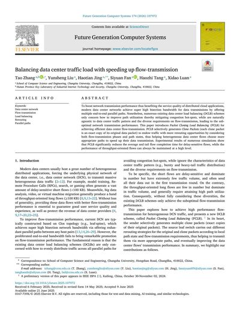
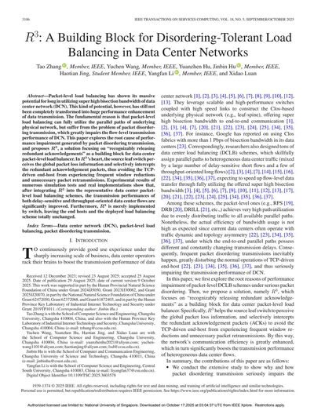
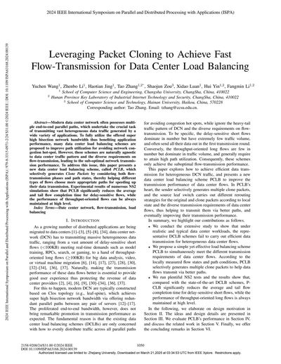
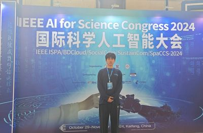

|
「敬淏天」
我是广西大学人工智能专业2026级在读研究生，研究方向为生物信息学。 本科毕业于长沙学院物联网工程专业，期间加入计算机网络优化实验室，研究方向为网络拥塞控制与负载均衡。 闲话 文章 |
| 暂无 |
|
 |
Future Generation Computer Systems, 2026（中科院一区 TOP）
作为通讯作者，在中科院一区 TOP 期刊《Future Generation Computer Systems》发表论文《Balancing data center traffic load with speeding up flow-transmission》。 |
|
 |
IEEE Transactions on Services Computing, 2025（CCF-A）
作为合作作者，在 CCF（中国计算机学会）推荐的 CCF-A 类期刊《IEEE Transactions on Services Computing》上发表论文《R3: A Building Block for Disordering-Tolerant Load Balancing in Data Center Networks》。 |
|
  |
2024 IEEE International Symposium on Parallel and Distributed Processing with Applications (ISPA)（CCF-C）
以第三作者身份在 CCF-C 类国际会议 IEEE-ISPA 2024 发表论文《Leveraging Packet Cloning to Achieve Fast Flow-Transmission for Data Center Load Balancing》，并赴开封主会场完成学术交流。 |